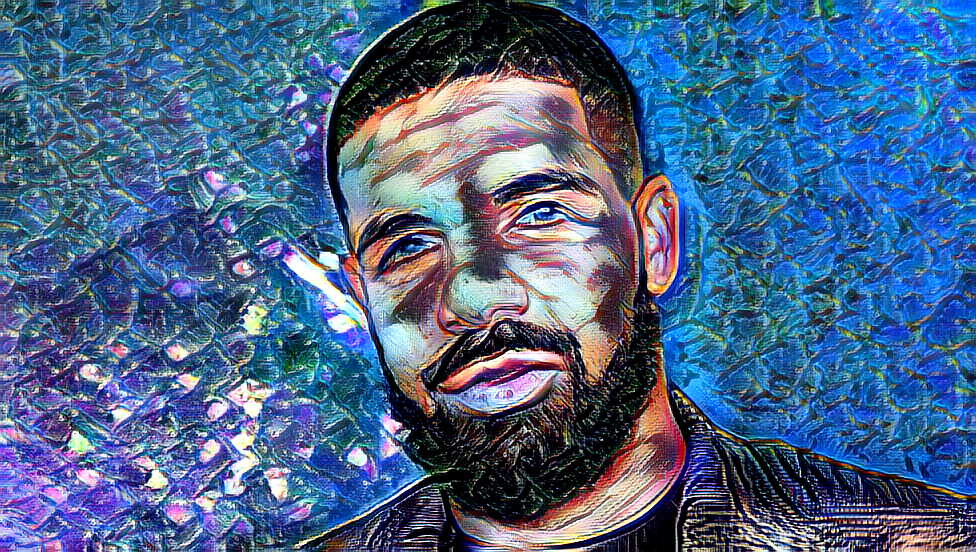

AI Art
For these works, I used two apps to create them. For the first one, I used SPADE COCO on Runway ML. This app uses brush tools that translate to a specific object whether it be grass or an animal. The second set was made using the same website, Runway ML, but instead using the AdaIN-Stlye Transfer program. With this prorgram, you can grab two images and combine them. The first image you use is the main image and the second image is your reference image. The image you're taking the style from and using the style into the first image.
SPADE COCO
For this image, I tried to create something from the movie Animal Farm. The only thing that prevented the scene from being something from the movie is the lack of there not being a Pig brush in the program. So I ended up with this sort of cursed image of a weird farm.
.png)
AdaIN-Style
For these series of images, I decided to use rappers I thought of from the top of my head and brought in the style of classical artworks. I decided to go with this them because I was just curious to see how each rapper would look like if they were painted by famous artists from long ago. These are the results I got.

.png)
.png)